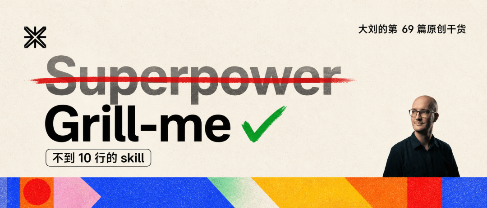
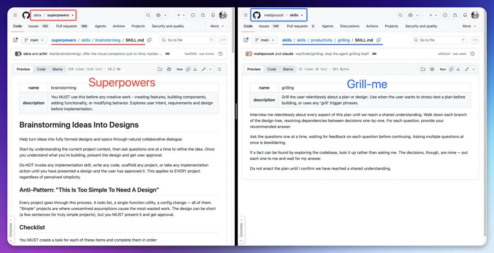
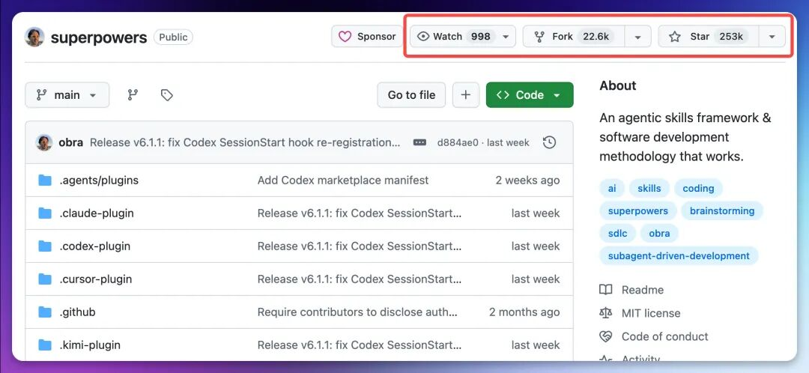
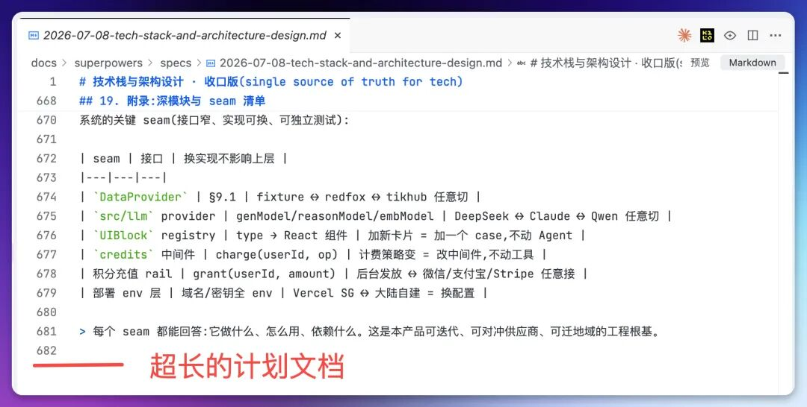
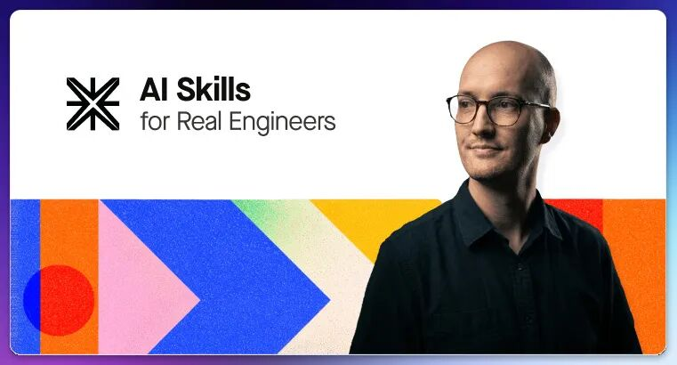
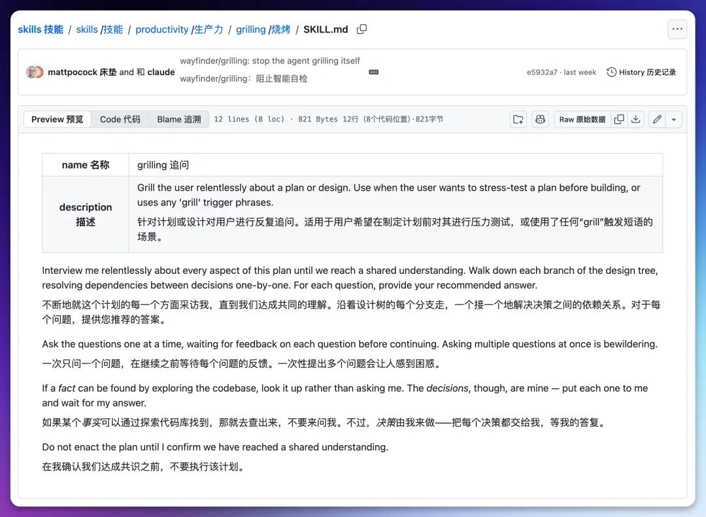
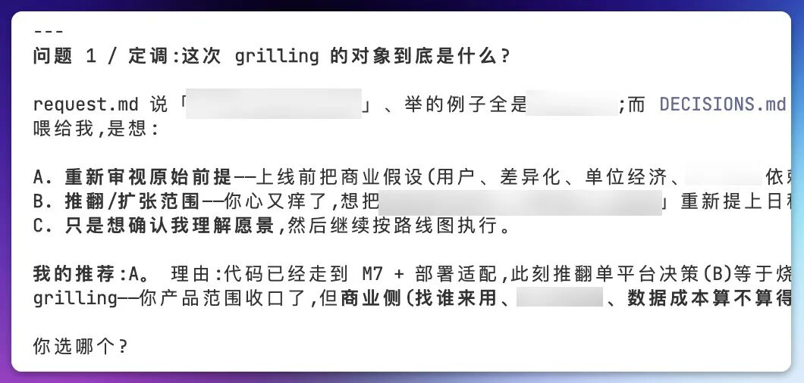

从 Superpowers 发布到现在，我一直是它的忠实用户。
相信使用 Claude、Codex 或者 Workbuddy 的你，它都是「先装为敬」的 Skill。
但最近我体感越来越差了，问题出在它的思考强度太大，一次问题的处理，动辄半小时起步。
如果说时间还可以忍受。
那么不能忍受的就是，一旦 Superpower 做的方案方向出了偏差，就得推倒重来，费时间，也费 token。
也就是说，Superpowers 的效果，越来越取决于你的需求描述得准不准：它所有的 brainstorming，都建立在你给出的需求之上。
问题是，你真的能准确描述自己的需求吗？
对大部分人来说，包括对我自己，这可能都没那么容易。
我最近的解决方案，是 grill-me 这个 skill。它已经基本替代了我所有使用 Superpowers brainstorming 的场景。
所以我有个预感(暴论)：2026 年，Superpowers 可能不再是唯一选择，甚至不再是最佳选择。
为了把这件事想清楚，昨天晚上，我把两个仓库放在两个窗口里，对照着读了一遍。
左边是 obra/superpowers：24.6 万 star，225 个文件，一整套 AI 开发方法论。
右边是 mattpocock/skills：它最出圈的那个 skill，打开 SKILL.md，正文不到 10 行。

两个项目解决的是同一个问题：让 AI 写出来的东西，不偏离你的本意。但它们给出的答案，方向完全相反。
所以这篇文章我为你分析一下：为什么 Grill-me 可能是更好的选择？普通人，到底该装哪个。
先说 superpowers。
作为用了大半年的老用户，我想先替它说句公道话。

它要解决的问题，是真实存在且有价值的。
AI 写代码，瓶颈早就不在生成速度，而在于：写出来的东西，和你想要的经常对不上。
这就是 Agent 现在的通病：你给一句模糊的指令，它自行脑补填空；你说「不对，不是这个意思」，它重写，你再看。几轮下来，代码没写几行，时间全耗在来回对齐上。
所以业界公认的解法是：
动手之前，先规划。头脑风暴、写计划、人工审查、再执行。
superpowers 的 brainstorming 把这套流程做到了最完整。
superpowers 一口气内置了 14 份规程：头脑风暴、写计划、执行计划、测试驱动开发、调试、代码审查……从你冒出一个想法，到代码合并收工，每一步都有规程接手。
说它是一本把「怎么干活」从头到尾规定好的制度手册，并不夸张。
它去年 10 月上线，至今 25.3 万 star，在 Claude Code 的圈子里几乎成了「先装为敬」的默认选项。
这个热度，说明了它的价值。
但用得越久，我越能感觉到它的问题，太重了。
这个重量，一半写在代码里。它有一个叫 using-superpowers 的 skill，每次会话开始都强制注入，措辞严厉到这个程度：哪怕任务只有 1% 的可能和某个 skill 相关，也必须先调用那个 skill。
哪怕 1%。，它的动机其实很清楚：先把 AI 的每一步接管下来再说。
另一半重量，落在我头上。方案由 AI 生成，判断对错的活全是我的：它产出一份长长的头脑风暴文档（经常会到上千行）。

真实场景下，可能是两条路：
1. 逐段读、挑错、解释，等它改完再从头读一遍。但是，这需要我花很多时间。
2. 直接默认对了，直接执行后续任务。最坏的情况是，从一开始他理解需求就错了。
为了保证正确，我的做法是，1，逐段读。
规划是更细了。但我的脑子，并不比自己动手写省力。
那么有没有更能理解我的需求，反馈更快，更准确的 Skill 呢？
这就需要说说 grill-me。
grill-me 出自另一个仓库：mattpocock/skills。作者 Matt Pocock，TypeScript 社区最有名的老师之一。15.6 万 star。

grill 这个词，除了「烤」，在英文口语里还有一层意思：拷问。
grill me，拷问我。
我第一次点开它的 SKILL.md 时愣了一下：正文不到 10 行。我甚至往下滚了两次，以为页面没加载完。

这 10 行说了什么？翻译成中文，大意是四件事：
无情地拷问我这个计划的每一个方面，直到我们达成共同理解。
每个问题，都附上你推荐的答案。
一次只问一个问题，等我答完再问下一个。
能翻代码库找到答案的问题，自己去翻，不要来问我。
在确认我们达成共同理解之前，不许动手。
就这些。
我实际用下来，它的体验和这 10 行一样克制。
它一个问题一个问题地审我的需求，每个问题都带着推荐答案，我不需要凭空思考，只需要对一份具体的问题表达是或者否。它能从代码库里查明白的事情，从不来烦我。
它不写任何文件，不留任何工作区，问完即止，唯一的产物是那份被逐轮打磨过的共识。而且它必须由我手动触发，绝不自作主张。
就像 skill 的名字一样，grill，它通过广泛的拷问你，来理解你的需求。

经过多轮的拷问，你会发现，AI 对你的需求，是你参与的，理解的几乎没有偏差。
完美解决 Superpowers 的问题。
一个替你管流程，一个逼你想清楚。
superpowers 赌的是：人说不清自己要什么，就让流程替人兜底。
grill-me 赌的是：人说不清自己要什么，就把人问到说清楚为止。
我的体感，有没有旁证？还真有一组对照实测。
数据来自开发者 Alex Rusin 的博客。他用同一个功能需求，走了三种规划方式，结果是三个数字。
对比方式和结果如下：
Plan Mode（Claude 自带）：0 个提问，约 10 分钟，直接出计划。
Superpowers：6 个提问，31 分钟以上，token 成本偏高，但能沉淀出规范文档和实施计划这类可复用的产物。
Grill Me：37 个提问，每一个设计决策都经过开发者本人的手。
0、6、37。那个 31 分钟，和我的半小时体感对上了。
这组数字，我读出两个结论。
第一，三种方式真正的差别，不在快慢，在你交出了多少决策权。
Plan Mode 的 0 个提问，是把决策全部交给 AI 的默认值；Superpowers 的 6 个，替你要回了一部分；Grill Me 的 37 个，则把 37 个本来会被悄悄带过的决策，全部摆上台面，等你拍板。
第二，拿回决策权，并没有想象中累。
审查一份长方案是作文题，每一步都要从零构建判断；回答带推荐答案的提问是选择题，只需要「A 还是 B」。
Rusin 自己的结论很谨慎：没有规划工具普遍最优。
但站在普通用户的位置，我的结论可以更直接：用不太累的 37 个问题，换回 37 个决策权，这笔账是划算的。
构建软件系统最难的单一环节，是精确决定要构建什么。恰恰这是 Grill-me 要解决的问题。
到底该装哪个
先说我自己现在的分工：brainstorming 环节，已经全部换成 grill-me，
superpowers 没有卸载，留给真正需要沉淀规范文档、实施计划的大项目。
我的建议是：
如果你是工程师，天天推进复杂的大 feature，团队需要能沉淀的规范文档和实施计划，superpowers 的 225 个文件能回本，31 分钟花得值。装。
如果你是普通用户，写点小工具、搞点自动化，需求经常自己也说不清，先别上全家桶。装 grill-me，一行命令：
它不到 10 行，不落文件，不改流程，只做一件事，
在 AI 动手之前，把你的需求问明白。
AI 时代把这件事放大了。执行力，AI 管够，你说得出来，它就做得出来。真正卡住进度的，始终是你有没有想清楚。
而想清楚自己要什么，AI 替不了你。它也恰恰是普通人在这个时代，最能握在手里的能力。
装上，换掉 brainstorming，让它拷问你一次。
以上，既然看到这里了，
如果觉得不错，随手点个赞、在看、转发三连吧，
如果想第一时间收到推送，也可以给我个星标⭐～
谢谢你看我的文章
你的关注是我持续更新的动力～
我是谁
我是 AI大刘，北大毕业，大模型研究方向，腾讯犀牛鸟，先后在腾讯、百度的大模型研发部门。现在斜杠青年：给多家国企做AI顾问 \ OPC \ 研究员 \ 产品独立开发者 \ Vibe Coder